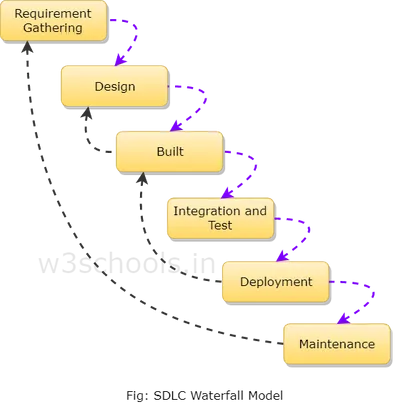
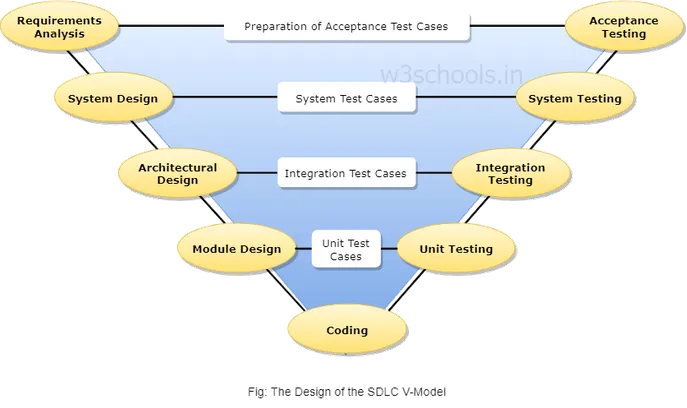
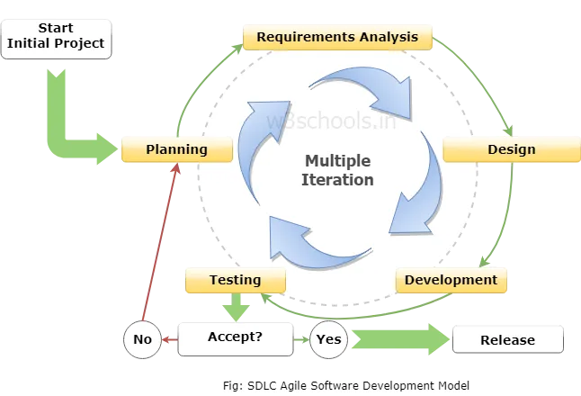

The first known presentation describing use of such phases in software engineering was held by Herbert D. Benington at the Symposium on Advanced Programming Methods for Digital Computers on 29 June 1956.
Time spent early in the software production cycle can reduce costs at later stages by finding problem in the early stages is cheaper to fix than the same bug found later on in the process
The basic idea behind this method is to develop a system through repeated cycles and in smaller portions at a time, allowing software developers to take advantage of what was learned during development of earlier parts or versions of the system. Learning comes from both the development and use of the system, where possible key steps in the process start with a simple implementation of a subset of the software requirements and iteratively enhance the evolving versions until the full system is implemented. At each iteration, design modifications are made and new functional capabilities are added.
In this Prototype Model before designing phase, a prototype is developed, tested, reviewed and approved by the customer, after that design will be ready for coding, testing, installation and maintenance will takes place. This prototype is prepared based on the customer requirements.
The spiral model method is used for risk management that combines the iterative development process model with elements of the Waterfall model. The spiral model is used by software engineers and is favored for large, expensive and complicated projects.
The V-model is a type of SDLC model where process executes in a sequential manner in V-shape. It is also known as Verification and Validation model. It is based on the association of a testing phase for each corresponding development stage. Development of each step directly associated with the testing phase.
The Agile software development model was mainly intended for helping developers build a project which can adapt to transforming requests quickly. So, the most important endeavor for developing the Agile model is to make easy and rapid project achievement. For attaining this task, developers need to correcting the progression to the project by eliminating activities which may not be crucial for that specific project.
Agile SDLC breaks down the product into small incremental builds which, the customer is able to see the result and understand whether the software product satisfied with it or not. Which is one of the advantages, to implement or fix during development.
